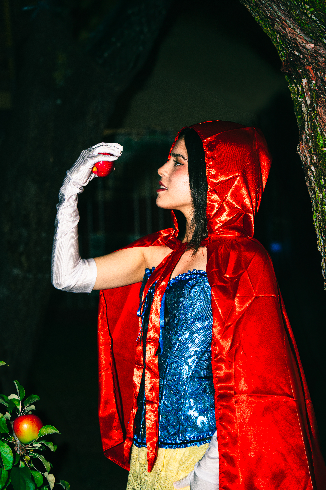

Fotógrafo & Filmmaker en Cajamarca · Narrativa visual, dirección de luz y cine

Soy Fredy Culqui, fotógrafo y filmmaker enfocado en crear retratos editoriales, sesiones artísticas y piezas audiovisuales con identidad cinematográfica.
Cada proyecto se trabaja cuidando la composición, la iluminación y el color para que el resultado conecte de forma auténtica con quien lo mira.